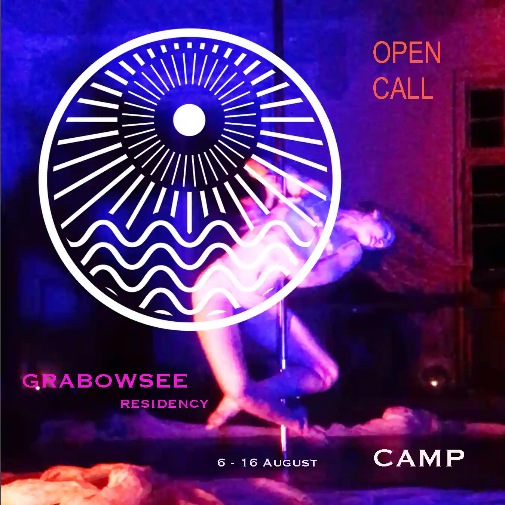

📢 OPEN CALL – Legends and lovelies, we are back! The application form is now online!
📅 SAVE THE DATES for Countdown Grabowsee 2026 — 06.8 – 16.8.26
This year under the working title Camp, we welcome all forms of artists, creatives, and musicians to join us for our 14th exploratory residency at Heilstätte Grabowsee.
Within the crumbling square of Heilstätte Grabowsee’s main building, filled with memories, dripping with nostalgia, speaking through dark history, full of seriousness, reloaded with silliness, there’s camping, there’s even glamping, there’s a campfire and: there will be CAMP.
CAMP might serve as a subtle revolution, binarities exchanging saliva, an abundance of artificiality. During times where seriousness is more needed than ever we might pose ourselves the question: is all seriousness deemed to fail?
And, because that must be a rhetorical question, let’s embrace the joy of failing gracefully, with grand gesture, until we fall on a bed of feathers, until we make love to the four horsemen of the apocalypse. Are we finally able to erase the distinction between camping and art?
CAMP might serve as a window into the past. It might even serve as a driveway into the future reeking of our present tense’s gasoline.
“The hallmark of camp is the spirit of extravagance” – Susan Sontag, Notes on ‘Camp’
We beg your pardon, we never promised you a rose garden!
You are invited to create a site-specific piece of work — this could be anything from a sculpture, painting, soundscape, workshop or conversation. We invite you to think outside your usual comforts of making and produce something on site using the working title and the unique nature of the space.
🧗 We kindly ask you to be self-reliant — the nature of the residency invites participants to adapt and respond creatively to the environment.
Email us with any questions.
Application deadline: 15.05.2026
Selected participants will be informed by the end of June.
💖 We look forward to your application and welcome you to this year's edition!